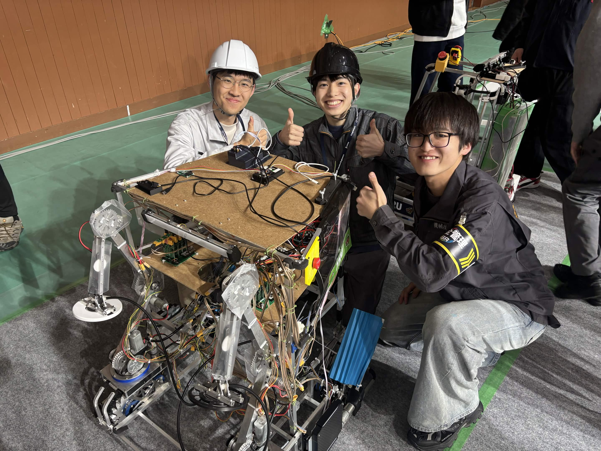

CoRE 2026に、アタッカーとビルダーの2台体制で出場しました。機動力と得点力を担うアタッカー、味方を支えながらフィールドを走るビルダー。それぞれの役割を明確にして大会に臨みました。

2台体制で挑んだCoRE 2026
今回の大会では、アタッカーとビルダーの2台を製作して出場しました。アタッカーは得点を狙うための機動力を、ビルダーは味方へのサポート力とフィールド全体を動かすための機動力を重視した構成です。異なる役割のロボットを組み合わせ、チームとして得点につなげる戦略を目指しました。
大会では、競技面だけでなく、チームとしての発信にも取り組みました。その結果、優秀広報賞と革新的アイデア賞を受賞しました。活動を知ってもらうための発信と、これまでにないアイデアで競技へ挑む姿勢を評価していただけたことは、大きな励みになりました。
遠隔開発で見えた課題
一方で、全国からメンバーが集まるTRUならではの課題もはっきりしました。遠隔で開発を進めるには、設計情報や作業状況の共有方法、担当の切り分け、実機での確認とオンライン上の意思決定をつなぐ仕組みが欠かせません。今回の大会を通して、遠隔開発の難しさと、まだ改善できる余地を具体的に把握できました。
次の大会に向けて
来年は、今回見えた遠隔開発の課題を一つずつ解決し、全国から集まったメンバーの強みをもっと活かせるチームを目指します。開発の進め方や情報共有を整え、個々の技術力をチームの戦力として結集できる状態をつくります。
CoRE 2026で得た経験と悔しさを次の挑戦につなげ、より強く、より広く、ロボコンの魅力を届けていきます。